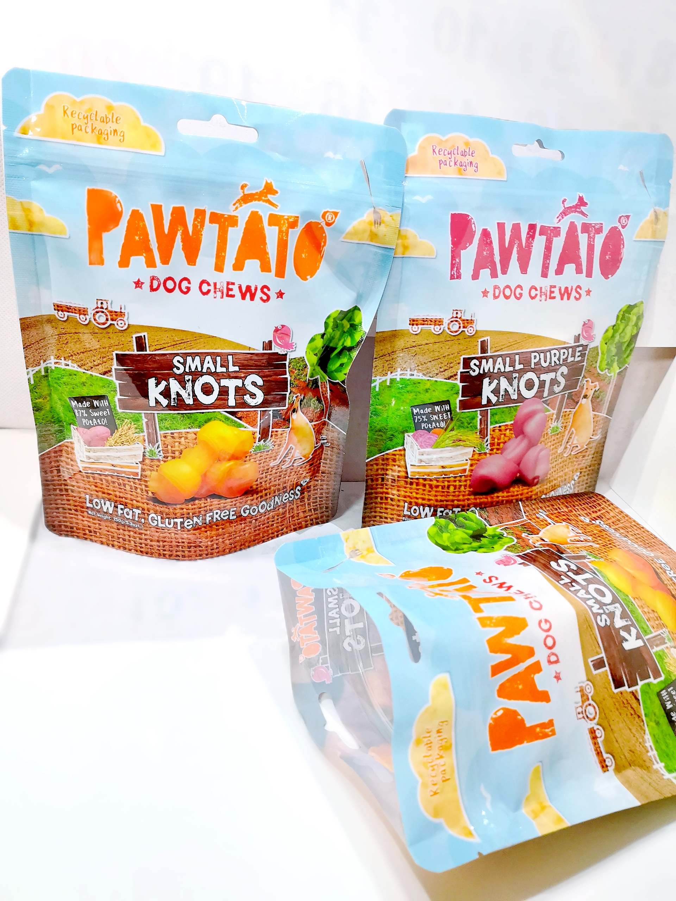

Next-Gen Pet Food Packaging: High-Barrier, Anti-Puncture & Sustainable Solutions for 2027

The global pet food and treats market is experiencing unprecedented growth. As pet owners increasingly treat their companions like family members, the demand for premium, organic, and specialized pet nutrition has skyrocketed. However, premium pet food presents unique packaging challenges: high fat and oil content, sharp kibble edges that cause punctures, sensitivity to moisture, and the urgent push for corporate sustainability.
For pet food brands looking to win the shelf in 2027, packaging must deliver uncompromising protection, structural durability, and eco-friendly compliance.
Overcoming Key Challenges in Pet Food Packaging
🔴 Anti-Puncture & Tear Resistance
Heavy kibble, dehydrated meat treats, and sharp bone-shaped snacks can easily puncture standard film laminates during transit and handling. At Shenying Packing, we engineer multi-layer laminated structures utilizing high-density nylon (NY) or toughened polyethylene (PE) layers to provide high tensile strength and superior puncture resistance.
🔴 Oil, Grease & Aroma Barrier
High-fat pet diets can migrate through sub-standard packaging films, causing unsightly grease stains on retail shelves and degrading package seals. Our specialized barrier layers prevent oil oxidation, lock in natural meat aromas, and keep external moisture and oxygen out to prevent spoilage and extend shelf life.
🔴 Consumer Convenience Features
Modern pet owners value easy opening and secure re-sealing. We integrate heavy-duty press-to-close zippers, slider zippers, and ergonomically designed tear notches that maintain seal integrity throughout repeated daily use.
The Sustainable Shift: 100% Recyclable Pet Pouches
As environmental regulations tighten globally, pet food brands are under pressure to phase out hard-to-recycle traditional laminates. Shenying Packing offers advanced 100% Mono-Material (Mono-PE & Mono-PP) recyclable pouch options. Compliant with RIC 4 and RIC 5 recycling streams, these eco-friendly structures provide the same high puncture resistance and oil barrier properties while allowing brands to eliminate plastic tax surcharges and meet 2027 corporate sustainability goals.
Flexible Manufacturing & High-Impact Visuals
Whether you require large-capacity flat-bottom pouches for dry kibble or stand-up pouches for single-serve treats, our factory supports custom sizing, matte/gloss tactile finishes, and high-precision gravure or digital printing with zero plate fees for seasonal launches and low-MOQ line extensions.
Looking to upgrade your pet food packaging for 2027?
Contact our technical team for high-barrier, puncture-resistant, and fully recyclable pet pouch samples.
📧 Email: may.lee@shenyingpacking.com
💬 WhatsApp: +86 13424643780